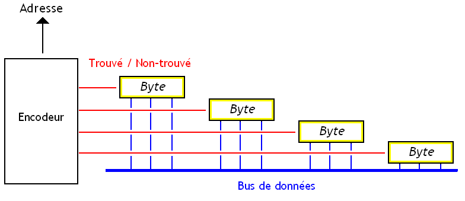
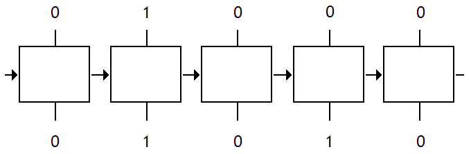
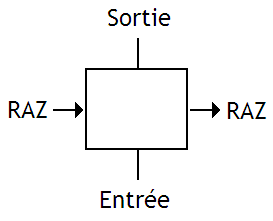

Quand on vous a parlé de mémoire pour la première fois, on vous a surement parlé des mémoires qui étaient adressables. Il est naturel de penser que toutes les mémoires sont des mémoires adressables : chaque Byte de la mémoire est numéroté par une adresse mémoire qui fait office d'identifiant permettant de sélectionner un Byte en particulier. Pour accéder à un Byte bien précis, il suffit d'envoyer son adresse à la mémoire, et celle-ci se chargera de fournir son contenu sur le bus de données.
Mais lorsqu'on vous a parlé pour la première fois de mémoires, on a surement oublié de vous dire certaines mémoires ne fonctionnaient absolument pas sur ce principe ! Je tiens à vous signaler que vous connaissez déjà une forme de mémoire qui n'est pas adressable : la mémoire cache d'un ordinateur. Elle fonctionne sur un principe de Tags assez complexe et non sur des adresses mémoires. Et oui, c'est la triste réalité : certaines mémoires ne sont pas adressables. Parmi toutes ces mémoires adressables, nos mémoires caches tiennent une place assez importante. Mais celles-ci ne sont qu'un sous-ensemble d'un type de mémoire bien plus grand. Il s'agit des mémoires adressables par contenu.
Il existe deux types de mémoires adressables par contenu : les mémoires caches en sont un premier type. Mais il existe aussi les mémoires associatives. Sur les mémoires associatives, on fait à peu-prêt la même chose qu'avec une mémoire à accès aléatoire, mais dans le sens inverse. Au lieu d'envoyer l'adresse pour accéder à la donnée, on va envoyer la donnée pour récupérer son adresse.
On peut légitimement se demander à quoi peuvent bien servir des mémoires aussi bizarroïdes. Franchement, si on a une donnée, à quoi cela peut-il bien servir de récupérer son adresse ? Et bien rassurez-vous : ceux qui ont inventés ces mémoires avaient toute leur santé mentale : ces mémoires servent à quelque chose ! Elles servent lorsque l'on doit effectuer des recherches d'une donnée en mémoire rapidement.
Recherche
Il n'est pas rare que l'on doive rechercher une donnée dans un ensemble de données. C'est une problématique assez connue des programmeurs, qui y font face tous les jours. Généralement, ces données sont toutes regroupées dans ce qu'on appelle des structures de données : tableaux, listes, graphes, sets, tables de hachage, arbres, etc. Effectuer des recherches dans ces structures de données n'est pas une chose des plus aisée.
Dans le pire des cas, à savoir des données stockées dans un tableau non-trié, il faut parcourir le tableau jusqu'à tomber sur la bonne. Bien sûr, les informaticiens ont depuis longtemps inventés des solutions algorithmiques qui permettent de rechercher plus rapidement des données dans un ensemble. Mais celles-ci ne sont pas des solutions miracles, et on perd toujours un peu de temps : on ne peut pas toujours tomber sur la bonne donnée du premier coup.
Les mémoires associatives sont une solution matérielle au problème de la recherche d'un élément dans un ensemble de données. Le processeur envoie la donnée recherchée à la mémoire associative, et celle-ci va vérifier tous ses Bytes pour voir s'il y a correspondance. Une fois la donnée trouvée, la mémoire peut alors permettre de modifier ou de lire notre donnée, ainsi que de récupérer son adresse : on tombe directement sur la donnée cherchée.
Grâce à ces mémoires, la complexité algorithmique de la recherche d'un élément dans un ensemble est très fortement diminuée et est de complexité constante : à peine un seul cycle d'horloge de la mémoire. On est bien loin des complexités que l'on peut obtenir avec des tableaux ou des listes, et l'ensemble est plus efficace que ce que l'on obtient avec des structures de données optimisées, même pour des complexités identiques.
Routeurs
Un cas d'utilisation basique est celui des routeurs. Comme vous le savez, nos ordinateurs ne communiquent pas sur un réseau n'importe comment. Nos ordinateurs sont tous identifiés par des numéros, des IP, qui servent à identifier l’émetteur et le destinataire d'un paquet de donnée. Ensuite, des machines spécialisées, les routeurs, vont se charger de faire passer chaque paquet de donnée émis par un ordinateur de proche en proche, d'un routeur vers un autre, jusqu'à ce que ce paquet arrive à destination. Pour savoir vers quel autre routeur envoyer un paquet, un routeur doit avoir une sorte de table, qui fait la correspondance entre une partie de l'adresse de destination d'un paquet, et la connexion sur laquelle notre routeur va devoir envoyer le paquet.
Cette table de correspondance s'implémente facilement en utilisant des mémoires associatives : il suffit de coupler une RAM avec une mémoire associative. Ainsi, si j'ai une liste de N correspondances IP-Route, il me suffit de stocker ces N ips dans une mémoire associative, et mes N routes dans une RAM. On place celle-ci dans l'ordre : la route stockée dans la RAM à l'adresse i correspondra à l'IP stockée dans l'adresse i de la mémoire associative. Si jamais l'adresse IP du paquet en cours de traitement est dans cette mémoire, celle-ci peut dire son adresse en un cycle d'horloge. Une fois cette adresse connue, il suffit d'aller lire la RAM à cette adresse. C'est nettement plus efficace que de stocker nos correspondances dans une RAM : on aurait du parcourir la mémoire jusqu’à ce qu'on tombe sur la bonne correspondance IP-Route.
Reste à déduire à quoi ressemble notre mémoire vu de l'extérieur.
Retour d'adresse
Tout d'abord, notre mémoire va renvoyer l'adresse à laquelle elle a trouvée la donnée.
Évidemment, il se peut que notre donnée ne soit pas présente dans la mémoire. Notre mémoire est donc obligée de préciser si elle a trouvé la donnée recherchée. Pour cela, elle va renvoyer un signal qui dit : j'ai trouvé la donnée (ou non) !
Petit détail : il se peut parfaitement que notre donnée soit présente en plusieurs exemplaires en mémoire. Dans ce cas, on doit trouver un moyen pour gérer ces duplicats. Sur les mémoires les plus simples, on va choisir un des exemplaires de la donnée et renvoyer son adresse. Les adresses des autres exemplaires sont passés sous le tapis. Sur d'autres mémoires, les adresses seront envoyées unes par unes au processeur, en rafale.
Notre mémoire est donc reliée à un bus de donnée, accessible en lecture et en écriture. Elle est aussi reliée à un bus d'adresse accessible en lecture (et parfois en écriture sur certaines). Et enfin, elle est reliée à un bus de commande, qui contient au minimum le signal Trouvé / Non-trouvé.
Maintenant que l'on sait ce que sont ces mémoires, voyons un peu comment les fabriquer. De ce qu'on sait de ces mémoires, elles peuvent sembler assez difficile à fabriquer. Mais il n'en est rien, et leur implémentation ressemble fortement à celle d'une mémoire normale, moyennant quelques modifications.
Notre mémoire a un fonctionnement assez simple : elle va prendre en entrée une donnée, et va vérifier si celle-ci est présente dans la mémoire. Une fois la donnée trouvée, elle va agir en conséquence. La recherche d'une donnée s'effectue donc en deux étapes : trouver la case mémoire qui contient la donnée, et ensuite faire ce qu'il faut (renvoyer l'adresse, un signal trouve/non-trouvé, etc). Voyons tout d'abord comment est gérée cette vérification.
Stockage
Une case mémoire d'une mémoire adressable par contenu a deux fonctions : stocker un bit, et effectuer une comparaison. Pour commencer, quelle que soit la mémoire associative utilisée, notre bit est stocké comme sur une mémoire normale. On peut utiliser une cellule mémoire de SRAM ordinaire, sans vraiment se fatiguer. Pour rappel, un bit de SRAM est stocké dans un montage à base de deux inverseurs, reliés comme indiqué dans le schéma du dessous. Sur ce schéma, la sortie notée Q est celle sur lequel on lire le bit mémorisé. La sortie /Q est celle sur laquelle on peut lire l'inverse du bit mémorisé.
Au fait, dans ce schéma, ainsi que dans tous les schémas qui vont suivre, je ne montrerai pas les transistors qui servent à autoriser les écritures dans notre bit de SRAM. Je fais ainsi pour alléger un peu les schémas et me concentrer sur l'essentiel. Mais sachez que ces transistors d'écritures existent : il faut bien écrire dans notre mémoire si on veut qu'elle serve à quelque chose.
Comparaison naïve
Reste la comparaison, qui est effectuée différemment suivant les cellules mémoires. Vérifier si une case mémoire contient la donnée, ainsi que faire nos comparaisons, s'effectue en utilisant un comparateur. Il s'agit d'un circuit qui compare deux données. C'est ce comparateur qui effectuera la comparaison d'égalité.
Dans le cas le plus simple, notre comparateur est séparé de la case mémoire et est conçu avec des portes NXOR et une porte ET.
Dans une mémoire associative, toutes les cases mémoires sont vérifiées en même temps. La donnée à rechercher dans la mémoire est envoyée à toutes les cases mémoires simultanément et toutes les comparaisons sont effectuées en parallèle. Sur le principe, tout se passe comme si chaque case mémoire était reliée à un comparateur qui s'occupe de vérifier si la case mémoire est bien celle qui contient la donnée envoyée en entrée.
Et tout ces comparateurs ne sont pas gratuits : ils utilisent beaucoup de transistors. A cause de cela, les mémoires associatives utilisent plus de transistors pour la même capacité : on peut se passer de ces comparateurs sur une mémoire normale, mais pas sur une mémoire associative. Et cela a pas mal de désavantages : ces mémoires chauffent, sont chères, ont une faible capacité mémoire, rendent les hommes impuissants, sont à l'origine d'épidémies de choléra, etc.
Comparaison optimisée
Pour limiter le nombres de portes logiques utilisées pour le comparateur, il arrive que le comparateur soit intégré dans la case mémoire. Les circuits chargés d'effectuer la comparaison sont fusionnés directement avec les cellules mémoires (les circuits de mémorisation), afin de gagner un peu de place.
On va voir dans la suite comment il est possible de réaliser ce genre de prouesse.
NOR
La première possibilité est celle-ci :
Son principe est simple. Regardez les deux transistors placés en série : si ces deux transistors ont chacun leur grille à 1, alors ils vont se comporter comme des interrupteurs fermés, et relier leur sortie Trouvé / Non-trouvé au zéro volt : la sortie vaudra alors zéro. Les transistors de gauche correspondent au cas où le bit mémorisé vaut 0 et le bit envoyé sur le bus vaut 1. Et les transistors de droite correspondent au cas où le bit mémorisé vaut 1 et le bit envoyé sur le bus vaut 0. Ces deux situations sont les seules dans lesquelles le bit mémorisé et le bit envoyé sur le bus sont différents.
Dans les autres cas, les transistors se comporteront comme des interrupteurs ouverts et ne relieront pas le signal Trouvé / Non-trouvé au zéro volts. Ce signal sera alors mis à 1 par des mécanismes extérieurs à la cellule mémoire (lorsqu'elle sera préchargée, plus précisément).
Nos différents signaux Trouvé / Non-trouvé des différents bits d'un seul Byte sont alors reliés ensemble comme ceci :
Le transistor du dessus sert à mettre notre signal Trouvé / Non-trouvé de notre Byte à 1. Ce transistor s'ouvre durant un moment afin de précharger le fil qui transportera le signal Trouvé / Non-trouvé, avant de se fermer juste avant que nos cellules mémoires de 1 bit commencent leur comparaison. Ensuite, nos cases mémoires effectueront leurs comparaison. Si pour un seul bit, la comparaison est fausse, alors le signal Trouvé / Non-trouvé sera relié au zéro volt. Dans le cas contraire, le fil contiendra encore une tension correspondant à un 1, qui sera alors amplifiée par divers amplificateurs de tension, et donnera un joli petit 1 en sortie.
NAND
Il est possible de câbler notre cellule mémoire autrement. Cette autre façon de faire est celle qui est indiquée sur le schéma ci-dessous :
Pour comprendre ce câblage, vous devez savoir que toutes les cellules d'un Byte sont reliées ensemble comme ceci :
Ce faisant, le signal Trouvé / Non-trouvé est relié à la masse quand toutes les cellules vont fermer le transistor du haut. Et inversement, il suffit qu'un seul transistor ouvre ce transistor pour que le signal soit relié à la tension d'alimentation. En somme, le signal obtenu vaut zéro si jamais la donnée et le contenu du Byte sont identiques, et 1 sinon.
Mais revenons à notre circuit.
Le principe caché derrière ce circuit est assez simple. Si jamais nos deux bits sont identiques, le transistor du haut recevra un 1 sur sa grille, et se comportera comme un interrupteur fermé.
Si jamais nos deux bits valent 1, le transistors de droite se fermera : cela reliera la grille du transistor du haut sur le bit envoyé par la donnée. Vu que ce bit vaut 1, le transistor du haut se fermera.
Inversement, si nos deux bits valent zéro, alors ce sera le transistor de gauche qui se fermera. Et cela reliera la grille du transistor du haut sur l'inverse du bit envoyé par la donnée. Vu que cet inverse vaut 1, le transistor du haut se fermera.
Dans tous les autres cas, le transistor du haut recevra un zéro sur sa grille : il restera ouvert.
Maintenant que l'on sait trouver une donnée dans la mémoire, reste à savoir quoi en faire. On a vu plus haut que notre mémoire adressable par contenu devait faire plusieurs choses : renvoyer un signal indiquant que la donnée était trouvée, et éventuellement renvoyer l'adresse de la donnée trouvée. Tout d'abord, on doit créer notre Signal Trouve / Non-trouvé. Et il faut avouer qu'il ne faut pas s’appeler Einstein pour trouver comment faire. Par définition, ce signal vaut 1 si jamais au moins un comparateur renvoie Trouvé. Donc, un simple ET entre toutes les sorties des comparateurs suffit.
Mais pour ce qui est de récupérer l'adresse de notre donnée, c'est une autre paire de manches. Pour commencer, on va se mettre dans un cas simple : seule une case mémoire peut contenir la donnée recherchée. On n'a aucun duplicat : pas de données présente en double dans la mémoire. L'idée de base est alors assez simple. Un seul comparateur va avoir son Signal Trouve / Non-trouvé à 1. A partir de ce signal à 1, on va pouvoir déduire l'adresse de la case mémoire. Si vous regardez bien, le problème qui est posé est l'exact inverse de celui qu'on trouve dans une mémoire adressable.
Décodeur
Dans une mémoire adressable, on va prendre une adresse mémoire, et en déduire quelle case mémoire connecter au bus. Ce choix s'effectue en envoyant un signal "Sésame, ouvre-toi" à la case mémoire adressée, et en envoyant un signal "Sésame, ferme-toi" à toutes les autres. Ces deux signaux sont codés sur un seul bit, et sont donc envoyés sur un seul fil. La case mémoire est choisie si ce fil contient un 1, tandis qu'elle est déconnectée si ce fil contient un zéro. La traduction entre adresse et signaux "Sésame, ouvre-toi" / "Sésame, ferme-toi" s'effectue grâce à un composant qu'on appelle un décodeur. L'intérieur d'une mémoire adressable ressemble donc à ceci :
Encodeur
Et bien avec les mémoires adressables par contenu, on se retrouve dans le cas inverse : on n'a pas l'adresse, mais les signaux sont là. On doit donc faire la traduction dans l'autre sens. La traduction va donc devoir se faire par un circuit, assez semblable au décodeur. Celui-ci s'appelle un Encodeur.

Cet encodeur est un circuit qui répond à plusieurs critères :
Il doit fournir une adresse codée sur n bits : ce contrôleur a donc n sorties ;
notre adresse de n bits peut adresser 2^{n} bytes : notre contrôleur mémoire doit donc posséder 2^{n} entrées ;
chacune de ces entrée va identifier une adresse parmi toute les autres ;
et enfin, deux entrées différentes donnerons des adresses différentes.
Priority Encoder
Bien évidemment, notre mémoire doit prendre en compte le fait qu'il se peut que plusieurs Bytes puissent être sélectionnés par la requête envoyée à la mémoire. Dans ce cas, la mémoire va devoir sélectionner un de ces Bytes parmi tous les autres. La solution de choix la plus simple consiste à prendre le Byte qui a l'adresse la plus petite (ou la plus grande). Pour cela, l'encodeur doit subir quelques modifications : il devient alors un Priority Encoder. Fabriquer un tel priority encoder est assez simple : on peut tout simplement écrire sa table de vérité et en déduire le circuit directement. Mais il va de soit qu'effectuer de telles manipulations pour créer des circuits avec un grand nombre d'entrée n'est pas la meilleure des solutions. Il est possible de faire autrement.
Première solution : on peut créer un Priority Encoder en utilisant un encodeur normal, précédé d'un circuit qui se charge de sélectionner un seul des bits passé sur son entrée.
Ce circuit est composé de petites briques de bases, reliées les unes à la suite des autres.

Ce circuit est basé sur un principe très simple : chaque brique de base va permettre de détecter le premier bit à 1 et va propager l’information aux briques de bases suivantes.
Voici à quoi ressemblent ces briques de base :

Chaque brique de base va fonctionner comme suit : elle va regarder le signal d'entrée RAZ et va en déduire si elle doit recopier le bit passé en entrée ou le mettre à zéro. Si le bit RAZ vaut 1, alors la sortie sera mise à zéro automatiquement. Dans le cas contraire, le bit passé en entrée sera recopié. Si jamais le bit d'entrée vaut 1 ou que le signal d'entrée RAZ est à 1, alors le signal RAZ de sortie sera mit à 1.
Ce circuit est constitué d'un paquet de Portes OU et NOR. Si vous cherchez à la concevoir à partir d'un table de vérité, vous obtiendrez ceci :
Évidemment, des implémentations plus efficaces existent, mais on ne va pas ne parler ici.
Il est possible d'utiliser une mémoire associative en supplément d'une mémoire RAM normale, pour accélérer certaines portions d'un programme.
Mais il est aussi possible d'utiliser une mémoire associative comme mémoire principale. On obtient alors une architecture assez spéciale, différentes des architectures usuelles, mais qui fonctionne tout à fait normalement.
Toutefois, la mémoire associative ne peut marcher que si celle-ci sert de mémoires pour les données : elle ne peut pas contenir les instructions d'un programme (sauf dans l'esprit de quelques chercheurs). Des architectures bâties autour de mémoires associatives sont donc forcément des architectures de type Harvard.
Avec de telles architectures, on peut effectuer des opérations sur un Byte de la mémoire associative à la fois : on récupère son adresse, puis le processeur effectue une lecture pour récupérer son contenu, l’opération est effectuée dans le processeur, et enfin le résultat est écrit dans la mémoire associative. Pour traiter tous les Bytes qui correspondent à une condition, il suffit de les parcourir les uns après les autres, en utilisant une boucle.
Processeurs associatifs
Toutefois, ces architectures ne sont pas les seules qui sont bâties autour de mémoires associatives. Après les mémoires associatives, il est maintenant temps de voir les processeurs associatifs. En gros, un processeur associatif est une sorte de mémoire associative sous stéroïdes.
Comparaisons
Sur une mémoire associative, on peut comparer la donnée passée en entrée avec chaque Byte. Mais avec un processeur associatif, on peut faire mieux : d'autres opérations sont disponibles. On trouve notamment des comparaisons supplémentaires. Ainsi, un processeur associatif supporte souvent les opérations suivantes :
Opération
Effet
>
Sélectionne la première donnée en mémoire qui est supérieure à la donnée envoyée sur le bus de données.
<
Sélectionne la première donnée en mémoire qui est inférieure à la donnée envoyée sur le bus de données.
>=
Sélectionne la première donnée en mémoire qui est supérieure ou égale à la donnée envoyée sur le bus de données.
<=
Sélectionne la première donnée en mémoire qui est inférieure ou égale à la donnée envoyée sur le bus de données.
==
Sélectionne la première donnée en mémoire qui est égale à la donnée envoyée sur le bus de données.
!=
Sélectionne la première donnée en mémoire qui est différente de la donnée envoyée sur le bus de données.
Between A And B
Sélectionne la première donnée en mémoire qui est comprise entre deux valeurs A et B.
Not Between A And B
Sélectionne la première donnée en mémoire qui n'est pas comprise entre deux valeurs A et B.
Sur ces processeurs, chaque opération de comparaison va permettre de sélectionner les données. En clair : les Bytes sélectionnés par une instruction de comparaison vont rester sélectionnés durant un ou plusieurs cycles. Pendant ce temps, on pourra demander à notre processeur d'effectuer d'autres opérations sur ces Bytes sélectionnés.
Masking
Encore mieux : il est possible pour notre mémoire de traiter des "requêtes" un peu plus complexes. Elle peut sélectionner les bits à prendre en compte dans une comparaison. En clair : elle peut effectuer ses comparaisons sur certains bits de ses données, et laisser tranquille les autres.
Pour cela, il suffit d'envoyer à notre mémoire un mot, qui permettra de savoir quels bits sont à prendre en compte dans notre donnée. Ce mot s'appelle le masque et il a la même taille qu'un Byte. Dans ce mot, si le I-éme bit est à 1, cela veut dire que ce bit est à prendre en compte dans notre comparaison. S'il est à zéro, il ne doit pas être pris en compte. Ce masque est envoyé à la mémoire via un second bus, séparé du bus de données.
Calculs
Ces opérations peuvent être une simple écriture, ou des opérations plus complexes. Généralement, nos processeurs associatifs permettent d'effectuer une opération Bitwise comme un ET ou un OU, entre la donnée passée en entrée, et les Bytes sélectionnés. Le résultat est stocké directement dans le Byte. Il faut dire que les circuits qui effectuent nos opérations logiques sont déjà présents dans nos mémoires associatives : les circuits qui effectuent du masquage, pour ne pas traiter certains bits lors d'une comparaison, sont ces circuits qu'on peut réutiliser facilement pour faire des opérations Bitwise. Mais sur certains processeurs, d'autres opérations sont disponibles, comme des opérations arithmétiques.
Branchements
Bien sûr, comme tout processeur qui se respecte, notre processeur associatif va aller lire ses instructions depuis une mémoire. Et comme sur tous les processeurs, celui-ci gère des instructions de contrôle de flot, à savoir des tests simples, et des branchements. Ces tests simples permettent de savoir si on a trouvé une donnée dans la mémoire ou non. Ainsi, après avoir envoyé une comparaison à la mémoire associative intégrée dans notre processeur, le processeur peut savoir si au moins une donnée a été trouvée ou non. Et il peut agir en conséquence.
Classifications
En gros, avec un tel processeur, on peut effectuer des opérations identiques sur un grand nombre de Bytes en parallèles. Il s'agit donc de processeurs qui appartiennent au paradigme SIMD. Pour continuer dans ces histoires de classifications, on peut signaler qu'il existe plusieurs types de processeurs associatifs. Dans ce qui va suivre, on va vous en montrer deux.
Fully Parallel
Le premier type correspond à ce qu'on appelle les processeurs Fully Parallel. Dans les grandes lignes, une case mémoire de ce genre de processeur associatif est constituée d'une case mémoire, d'un ou de plusieurs registres, et d'une ALU qui sert aussi de comparateur. L'ensemble est câblé comme ceci :
Cette ALU est capable de traiter tous les bits de notre case mémoire d'un seul coup. Évidemment, devoir rajouter une ALU pour chaque Byte n'est pas gratuit : cela bouffe énormément de transistors. En clair : on ne risque pas de construire des processeurs de ce type qui contiennent beaucoup de mémoire.
Un processeur de ce type est composé d'un paquet de cases mémoires, couplées à une unité de contrôle.
Bit Serial
Pour réduire la quantité de circuits utilisés, une solution assez simple est envisageable : chaque Byte se voit toujours associé à une ALU, mais celle-ci est castrée et ne peut traiter qu'un seul bit de notre case mémoire à la fois. On rentre alors dans la catégorie des architecture dites Bit-Serial.
Pour pouvoir traiter un seul bit à la fois, notre case mémoire est implémentée en utilisant un registre à décalage. De plus, la donnée envoyée sur le bus de donnée est recopiée dans un registre à décalage.
Pour faciliter l'implémentation des comparaisons ou de certaines opérations, cette ALU est souvent reliée à une petite mémoire de 1 bit.
Dans le cas d'une comparaison, celle-ci sert à mémoriser le résultat de la comparaison des bits antérieurs : la comparaison s'effectue bit par bit, et le résultat des comparaisons précédentes est sauvegardé dans ce bit. Il peut aussi servir dans l'implémentation d'autres opérations, comme des additions.
Pour donner un exemple, je vais prendre l'exemple d'un test d'égalité entre un Byte qui contient la valeur 1100, et une donnée qui vaut 0100. Pour effectuer ce test, notre processeur va devoir comparer chaque bit un par un en utilisant une porte NXOR, tout en prenant en compte le bit indiquant le résultats des comparaisons précédentes avec une porte ET.
Le résultat de la comparaison est disponible dans notre bascule de 1 bit une fois la comparaison terminée. Notre bascule sera donc reliée à la sortie sur laquelle on envoie le signal Trouvé / Non-trouvé.
Mais cette bascule peut aussi servir dans d'autres opérations. Par exemple, si notre processeur implémente des opérations d'addition, notre addition peut se faire bit par bit. Notre bascule sert alors à stocker la retenue de l'addition des deux bits précédents.
Word Serial
Enfin, il existe un dernier type de processeur associatif : les processeurs dits Word Serial. Ces processeurs sont une véritable arnaque : avec eux, on trouve une unité de calcul pour toute la mémoire. Cette unité peut être une vulgaire unité de 1 bit, ou peut traiter un Byte complet de la mémoire, peu importe. Tout ce qu'il faut savoir, c'est que l'opération que va effectuer l'ALU (sauf les comparaisons), seront effectués sur chaque Byte, mais ceux-ci seront traités uns par uns.
Un processeur de ce type est composé d'un paquet de cases mémoires, couplées à une unité de contrôle et une ALU.
On peut implémenter de tels processeurs avec une mémoire RAM, et une unité de contrôle qui se charge de parcourir la mémoire adresse par adresse automatiquement. En gros, on se retrouve dans la même situation qu'avec un processeur relié à une mémoire normale, à part que la boucle qui permettait de traiter chaque Byte est incorporée dans la mémoire, via l'unité de contrôle.
Pour les curieux, sachez qu'il existe encore un peu de documentation sur le sujet, disponible sur Internet. Pour ceux intéressés par le fonctionnement interne des mémoires associatives, je conseille de lire l'article "Content-addressable memory (CAM) circuits and architectures: a tutorial and survey". Pour les autres, sachez qu'il y a assez peu de documentation sur les processeurs associatifs : il s'agit en effet d'architectures assez anciennes, qui n'existent plus aujourd'hui.